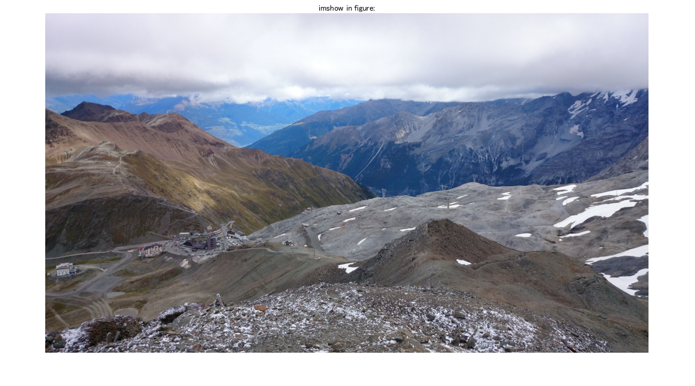
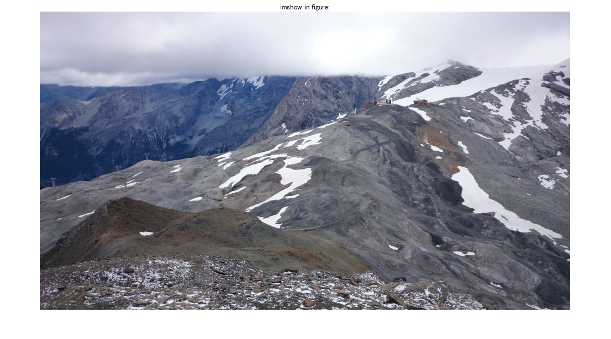
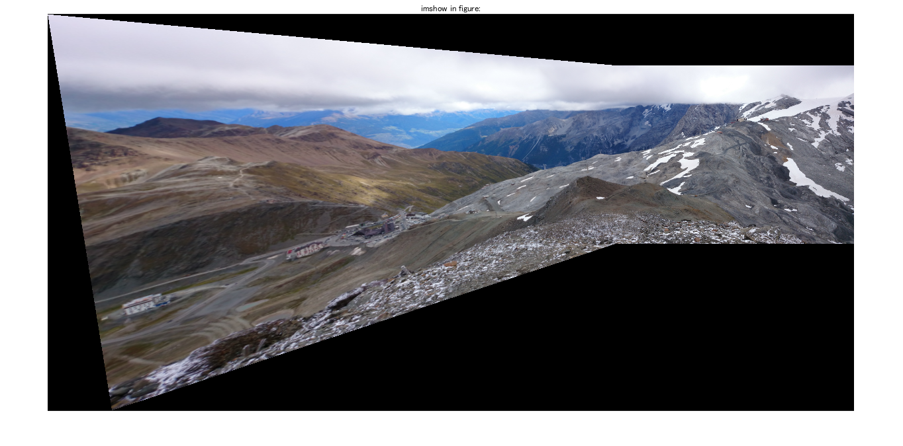
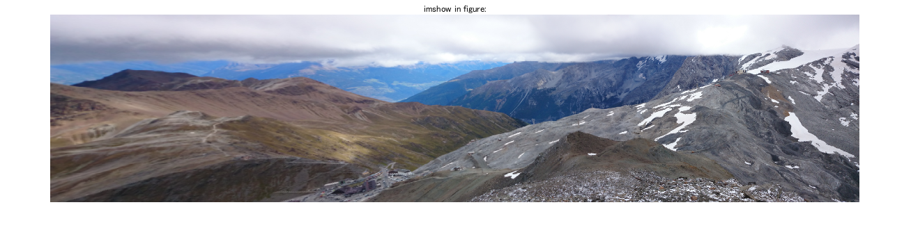
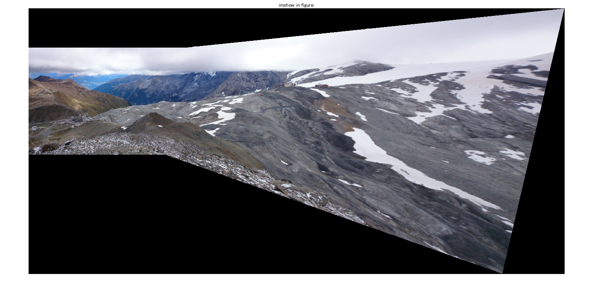

Contents
% Panorama stitching via sift descriptor matching & homographies % for Computational Photography hs2016, Project 05 (P8050). % % Using sift features and ransac to match them we compute a homography % that matches features in one image to the same features in the other % % See html/ for a published version of a run of this. % can use any images with sufficient overlap, order does not matter % however, downsample hd images, matlab isnot big data ready ;) image1 = imdownsample( imdownsample( imreaddouble('panorama3_left.jpg'))); image2 = imdownsample( imdownsample( imreaddouble('panorama3_right.jpg')));
Show the images
close all;
imshow_in_figure(image1);
imshow_in_figure(image2);
title = imshow in figure: title = imshow in figure: 
panorama-stitch the images using the technique required
This will take a while.
homography2d_ransac2 recomputes the homography using all inliers again, unlike homography2d_ransac. But there is not much difference
close all;
[final_image, image_mask] = panorama_stitch(image1, image2, @homography2d_ransac2);
imshow_in_figure(final_image);
ransac
警告: 行列は、特異行列か特異行列に近い行列です。結果は不正確になる可能性があります。RCOND =
2.503077e-25。
警告: 行列が特異なため、正確に処理できません。
best_h =
1.0000 0.1561 -568.2424
0.0845 0.8790 -74.7690
0.0007 0.0002 0.2933
best_m =
359
target_data_range =
-1474 960 -154 1046
imtransform_bilinear_homography in progress (vectorized)...
imtransform_bilinear_homography in progress (vectorized)...
imtransform_bilinear_homography in progress (vectorized)...
imtransform_bilinear_homography in progress (vectorized)...
title =
imshow in figure:
警告: イメージが大きすぎて画面に収まりません。50% で表示します。
 We can automatically crop the images
This will take a while.
close all;
final_image_cut = imcutrect(final_image, image_mask);
imshow_in_figure(final_image_cut);
FindLargestRectanglesSub title = imshow in figure: 警告: イメージが大きすぎて画面に収まりません。50% で表示します。
panorama-stitch the images with the other image unchanged
close all;
[final_image, image_mask] = panorama_stitch(image2, image1, @homography2d_ransac2);
imshow_in_figure(final_image);
ransac
警告: 行列が特異なため、正確に処理できません。
best_h =
1.0e+03 *
0.0010 -0.0005 1.7427
-0.0003 0.0025 0.0976
-0.0000 -0.0000 0.0031
best_m =
358
target_data_range =
1 2700 -196 1143
imtransform_bilinear_homography in progress (vectorized)...
imtransform_bilinear_homography in progress (vectorized)...
imtransform_bilinear_homography in progress (vectorized)...
imtransform_bilinear_homography in progress (vectorized)...
title =
imshow in figure:
警告: イメージが大きすぎて画面に収まりません。50% で表示します。
